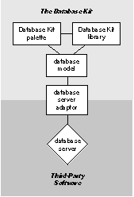
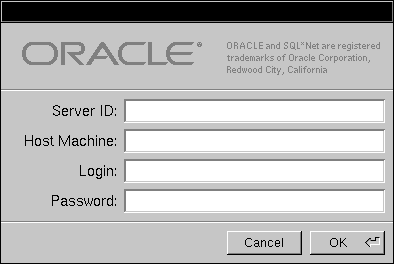

Release 3.3 Copyright ©1995 by NeXT Computer, Inc. All Rights Reserved.
| 1 |
Overview
| Sophisticated database systems allow accurate and secure data storage and efficient data retrieval. These systems can be extraordinarily complicated; they hold enormous amounts of data and require database administrators to maintain them. But however complex, most database systems can be divided into two parts: |
| A data storage and retrieval system. This is the database server, the part of the database system that actually stores data and knows how to find particular items. Typically, a database server is a program that runs on a dedicated computer; database users connect to the server over a network. | ||
| A front-end application. The user must be able to access and manipulate the data that's stored in the server. This is done through a user interface, or "front-end," application that selectively and intelligently displays data. |
| The Database Kit is a set of tools and resources that helps you can create front-end applications that work with any NEXTSTEP-compliant database server. These tools don't help you build a complete database system from the ground up--the tasks of data storage and retrieval are left to a database server supplied by a third party. Rather, the Database Kit lets you design front-end applications that are easy to build and maintain, that can communicate with other applications, and that draw upon the standard interface features that are common to all NEXTSTEP applications. |
| The Database Kit, Servers, and Data |
| Most commercially-available database applications are tied to particular servers. This marriage has two notable consequences. The more obvious is that the application will only work with its designated server. The other consequence--one that can be characterized as a feature of the single-server approach--is that the data operations are performed directly on the data in the server.
The Database Kit, on the other hand, uses a buffer-editor approach to accessing data on a server. Rather than act directly on the server's data, it provides every application with a buffers--specifically, two-dimensional tables--into which server data is copied, or fetched. The client (in other words, your application) is allowed to edit the data in these tables. When the client wants to publicize its modifications, it updates the server by sending it the data from the tables it has edited. The server replaces its original contents with the data that has been sent to it by the client. There are a number of advantages to this scheme. Foremost of these is that while the data resides in your application, you can treat it like any other data. That the data has been fetched from a particular server--or that it has been gotten from a database server at all--is of no consequence. Also, because the Database Kit holds data apart from the server, your application can achieve a degree of server-independence. There are some concerns that arise from the buffer-editor approach. When multiple users have buffered access to the same data, maintaining the integrity of the data can be a problem: Between the time that you fetch data and the time that you update the server, some other client application may have fetched, altered, and saved the same set of data. In recognition of this possibility, the Database Kit has a built-in set of integrity checks that ensure that your application won't clobber someone else's changes. (Actually, the gap during which integrity is threatened isn't unique to a buffer-editor application--it's simply more pronounced.) |
| Database Application Components |
| To create an application with the Database Kit, you need, in addition to a database server, four things: |
| A database server adaptor. An adaptor is a mechanism that connects your application to a particular server. For each server that you use, you need a separate adaptor. The Database Kit provides adaptors for the Oracle and Sybase servers; adaptors for other servers are provided by third-party companies. | ||
| A database model. A database model describes the organization of the server's data, and, in so doing, provides a mapping between the server's data structures and Database Kit objects. Models can be built graphically through the DBModeler application. The Database Kit also publishes an open (ASCII) model file format, allowing you to build database models with a text editor, or through a your own model-building program. Every model refers to a particular adaptor--a model is said to "use" an adaptor. Example model files that use the Oracle and Sybase adaptors are provided by the Database Kit. | ||
| The Database Kit palette. The Database Kit palette, presented by Interface Builder, gives you access to the user interface objects that are provided by the Kit. But the palette is more than simply a catalog of objects; it can read the model that you've designed, and takes care of some of the details of database application design automatically. Another benefit of the palette is that it understands how to connect to the server while you're designing your interface; this means that you can test your interface (in Interface Builder's Test mode) by filling it with the actual data that's fetched from the server. | ||
| The Database Kit library of classes and protocols. The classes and protocols provided by the Database Kit let you programmatically manipulate data as it passes between the server and the user interface. Although simple applications can be created entirely in Interface Builder, any sophisticated application will require some use of the Database Kit classes in your own code. |
| Figure 1 illustrates the layout of these components as they are used by your application. The light grey box contains the pieces that are provided by or can be created with the Database Kit; the dark grey box contains third-party offerings. |
|  |
| Figure 1. Database Application Ingredients
The role of the adaptor is described in the following section. The rest of the chapters in this manual examine the other parts of a Database Kit application. |
| Adaptors |
| A database server adaptor is a mechanism through which your application communicates with a database server. For each server that you use, you need a separate adaptor; the adaptor produces server-specific commands through which your application receives and sends data. NEXTSTEP provides adaptors for the Sybase and Oracle servers.
What an Adaptor Does An adaptor's main duties fall into three areas: connecting to the server, communicating with the server, and converting data formats.
Connecting to the Server The adaptor creates and maintains the connection between your application and the server. When it creates the connection, the adaptor presents a login panel that queries the user for information such as the name of the server, the machine on which it's running, a password, and so on. The login panel for the Oracle adaptor is shown below. |
|  |
| Figure 2. Oracle Login Panel
The login panel for a particular adaptor should appear only once while your application is running; however, it may appear a number of times as you're using the tools that help you design your application. In particular, DBModeler and Interface Builder may provoke the login panel at various times.
Communicating with the Server A database's data is accessed and modified through commands that are defined by the server. However, the Database Kit doesn't necessarily "speak" the server's language--at least not directly. The adaptor is responsible for translating between the server's commands and the methods provided by the Database Kit. For example, when your application sends a message that fetches data from the server, this message finds its way to the adaptor which must issue a command that the server understands.
Data Format Conversion Each database server represents and stores data in its own data formats. The Database Kit represents each item of data as one of the Objective C data types, and stores this data in objects. The responsibility for translating data from a server's native formats to Objective C data types falls to the adaptor.
What an Adaptor Doesn't Do An adaptor isn't a database administrator. Database administration programs add users or accounts to the system, verify passwords, distribute data storage across computers, and so on; the adaptor isn't required to do any of this. In general, administration tools (programs) are provided with each database server. You should depend on these for all administration operations.
Adaptor Files An adaptor is represented as a file that has the extension ".adaptor". Adaptor files are stored in the Adaptors subdirectory of a library directory (~/Library, /LocalLibrary, or /NextLibrary). The adaptor for the Oracle server is named OracleAdaptor.adaptor; that for Sybase is SybaseAdaptor.adaptor. Both are located in /NextLibrary/Adaptors. Every application needs to incorporate at least one adaptor file. However, this incorporation usually isn't direct. Instead, you drag one or more database model files into your application through Project Builder. Each model refers to a particular adaptor; thus are adaptors incorporated into your application. The details of this scheme are explained through the course of this manual.
Adaptors for Other Servers Creating adaptors isn't publicly supported; see the Third-Party Products for NEXTSTEP catalog for a list of adaptors that are provided by other companies.
Affecting an Adaptor The Database Kit provides methods that let you programmatically retrieve the object that represents the adaptor that your application is using. You can send messages directly to this adaptor object if the company that supplied the adaptor publishes a programming interface for it. The Database Kit doesn't publish the interfaces for the adaptors that it provides. However, it does provide some default parameters that a user can set to alter certain aspects of the Oracle and Sybase adaptors. These parameters are described in Appendix A, "Adaptor Default Parameters." |